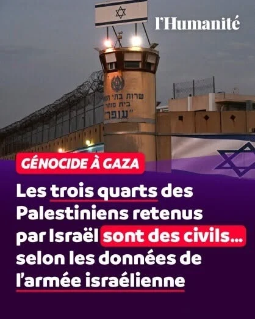

Revue de presse
L’Humanité enquête sur la détention de civils palestiniens
Date de mise à jour indiquée par Facebook · 5 septembre 2025
Repères éditoriaux
L’Humanité a relayé le 5 septembre 2025 une enquête de +972 Magazine, Local Call et The Guardian. Selon ces trois médias, qui disent avoir consulté des données de l’armée israélienne, les trois quarts des Palestiniens détenus par Israël depuis octobre 2023 étaient des civils.
Texte de la publication · L’Humanité
Sans procès ni inculpation
➡️ https://l.humanite.fr/BeR

Sources
L’Humanité · publication relayée par le PCF 79 · bibliothèque Facebook · AR-0002-FB-01025
À lire aussi · Gaza. Des médias se mobilisent pour les journalistes palestiniens